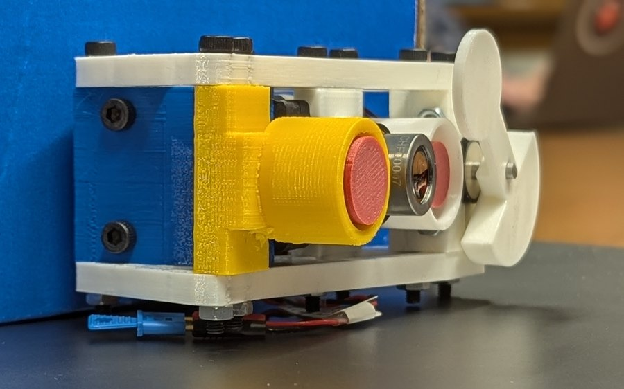
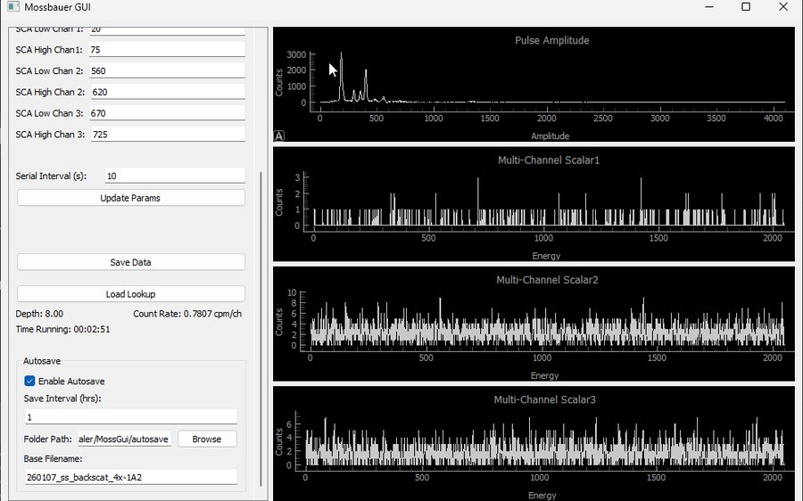
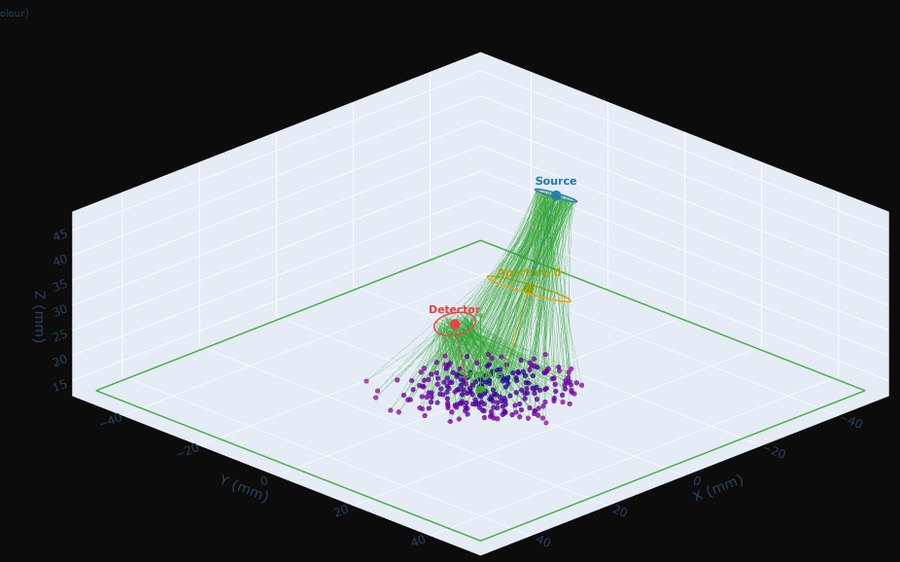
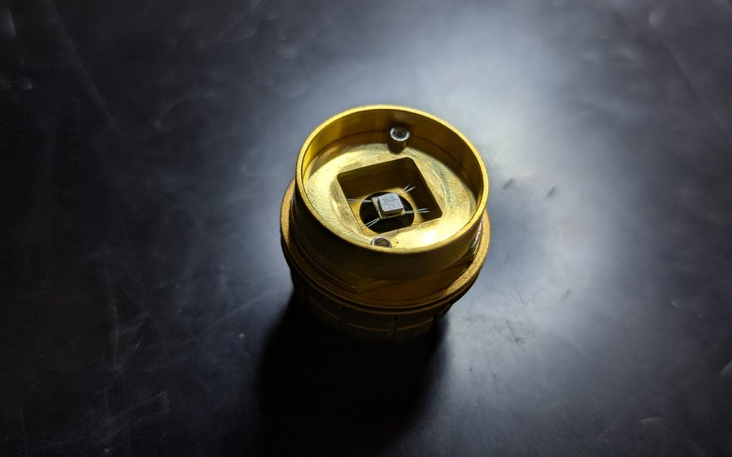
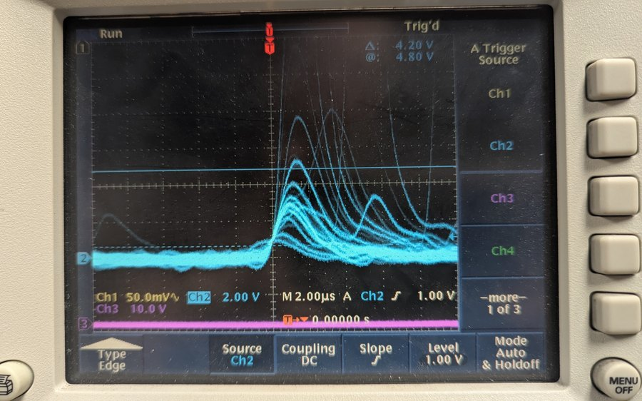
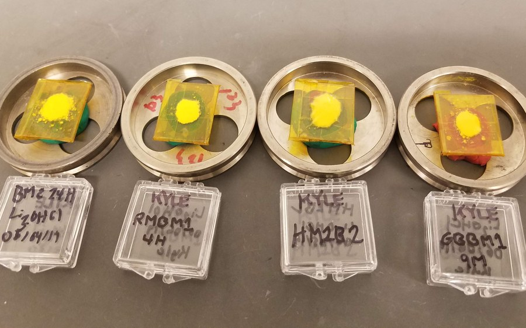
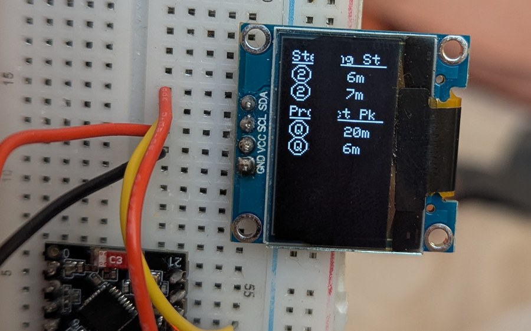

Instrumentation
Miniaturized Mössbauer / XRF spectrometer
The instrument itself: a backscatter geometry driven by a piezoelectric stack under closed-loop velocity control.
Paper in preparation
I'm a materials science PhD candidate at Caltech, in Brent Fultz's group. I measure heat, very carefully.
High-entropy alloys are named after their entropy, so somebody had to go and measure it. That was me, for four years, down to 2 K.
The other half of my time goes to a Mössbauer spectrometer small enough to fly to another planet, which is, I maintain, the most fun anyone has ever had with a piezoelectric stack and a gamma source.
Before Caltech: Georgia Tech, twice. Off the clock I lead group hikes, and print far too many things.
Miniaturization of a combined 57Fe Mössbauer and XRF spectrometer for planetary surface analysis. I built the drive and counting chain, and the group's Python tools for fitting the spectra.
Precision calorimetry from 2 to 400 K on aluminum-added CoCrFeNi, CoCrFeMnNi and NbTa0.5TiZr, with Mössbauer spectroscopy, diffraction, electron microscopy and spin-polarized DFT.
Processing routes for solid electrolytes and cathodes, measured by impedance spectroscopy.
The entropy of “high-entropy” alloys of transition metals with aluminum. K. Hunady, I. Elmasri, B. Fultz. Acta Materialia, in revision.
Feedback control and geometry optimization of a miniaturized Mössbauer spectrometer with piezoelectric drive. R. Toda, K. Hunady, E. Labelson, et al. In preparation.
Entropy in multi-principal-element alloys. Talks, TMS Annual Meeting, 2025 and 2026.

The instrument itself: a backscatter geometry driven by a piezoelectric stack under closed-loop velocity control.

Teensy firmware that bins counts against the drive phase, and the silicon drift detector pulse processing in front of it.

A photon ray-tracer that searches source, sample and detector geometries for the backscatter instrument.

Heat capacity measured down to 2 K, integrated to give the total entropy of each alloy.

Reads a pulse train off an oscilloscope and builds the pulse-height distribution, so the single-channel analyzer window can be set where the counts are.

Lithium-rich anti-perovskite powder, one mount per milling condition, compared by impedance spectroscopy.

A desk clock for the MTA. It decodes the GTFS-realtime feed on an ESP32 and drives a small OLED.
Also on GitHub: export-layers and multilayer-grid, two extensions for Inkscape 1.x.
Email is the best way to reach me. Click to copy the address.